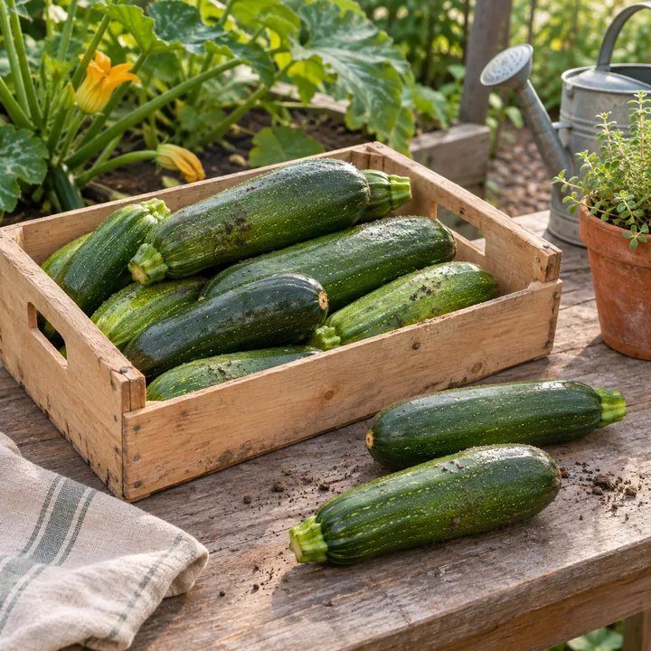

Come organizzare il raccolto dell’orto quando arriva tutto insieme
Contate quello che avete raccolto e decidete cosa usare, cosa regalare e cosa tenere per i prossimi pasti.

Dividete il raccolto in tre
Quando arrivano molte zucchine insieme, pesatele o contatele. Tenete a portata di mano quelle per il pasto di oggi e mettete a parte la quantità da regalare. Per il resto, decidete quando usarlo e come conservarlo in base al prodotto.
Guardate il raccolto prima di fare la spesa
Rivedete il raccolto con la lista in mano. Se avete già zucchine per due cene, potete saltarle e comprare solo quello che serve per completare i pasti.
Prova con EatMeFirst
Potete inserire il raccolto a mano, anche senza codice a barre, e aggiornarlo quando lo usate. Le scorte, la lista e il salvataggio automatico sono gratuiti. EatMeFirst si apre dal browser, senza download o registrazione.